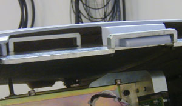

| NOTE: | RT systems are wider than the rest of the 5.x systems. Due to this, there is an extra top center “spacer” cover that each top cover fits into so the same top covers can be used on all 5.x systems. This is not shown in the Illustration. |
Illustration 2: Top Cover Tabs and Bracket
